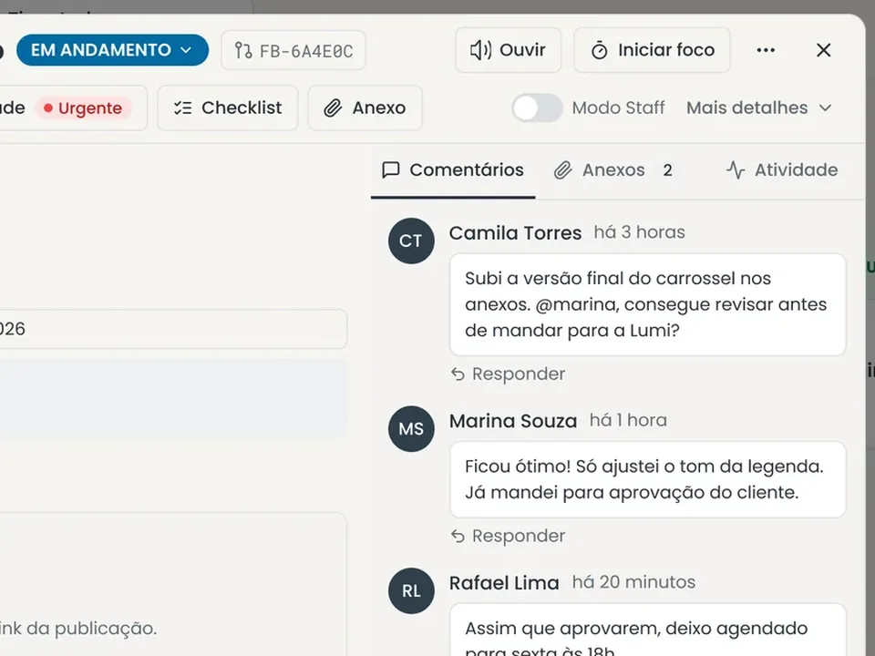
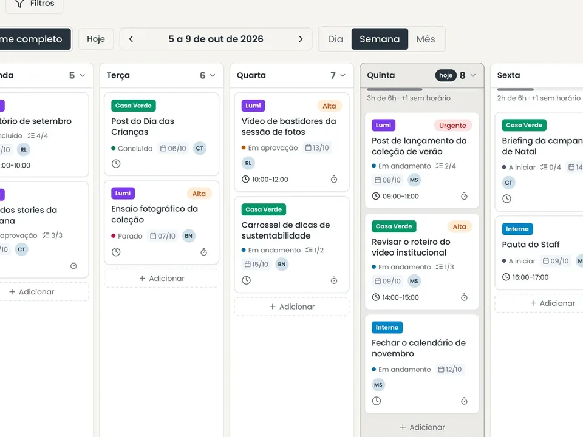
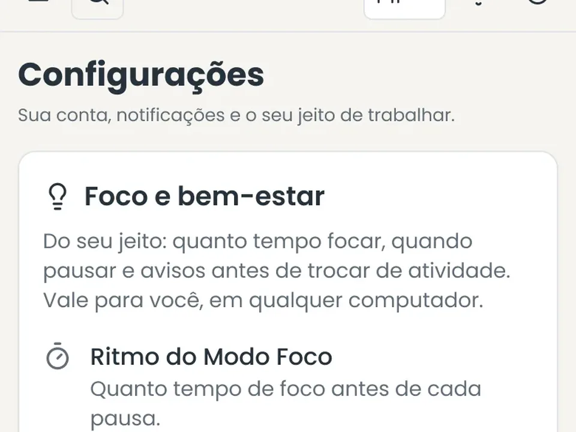
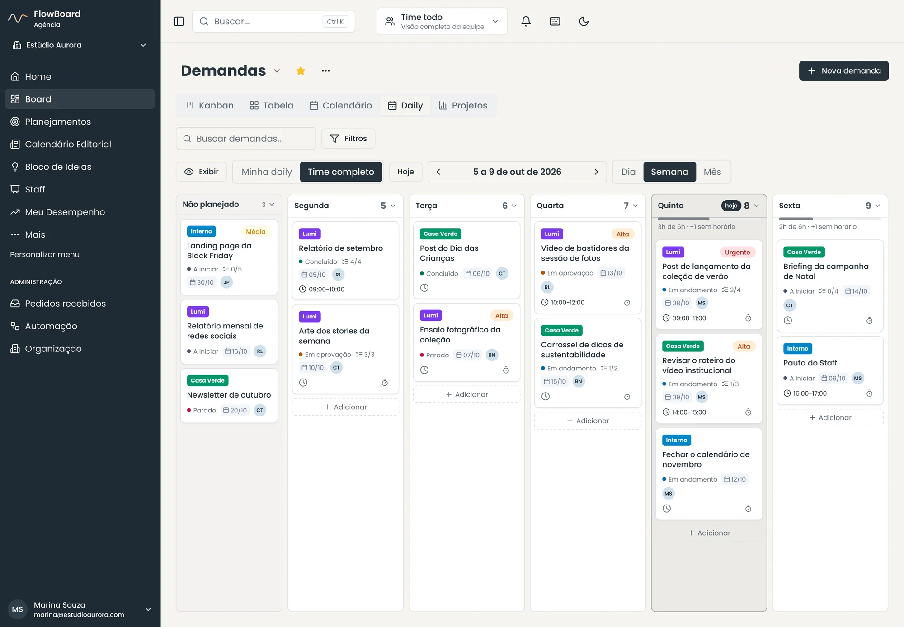
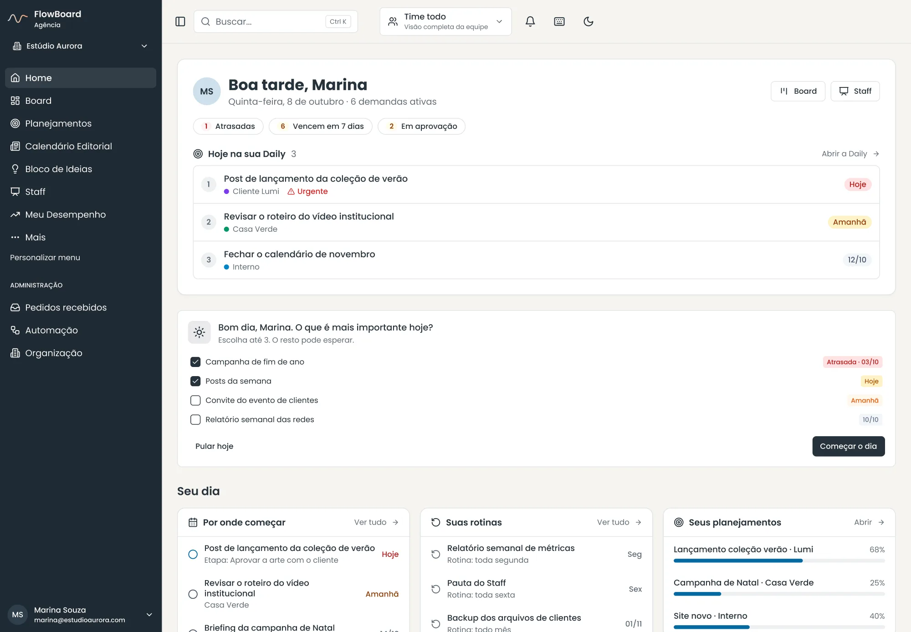
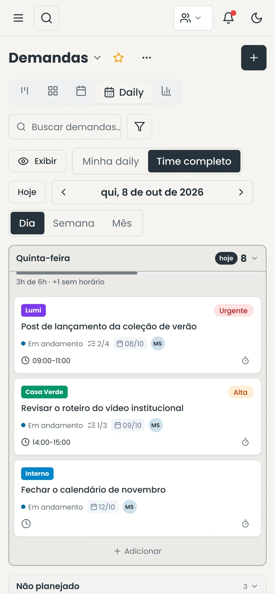

FlowBoard · Estudo de caso
Trabalho não deveria exigir que você segure tudo na cabeça.
Como uma ferramenta que eu construí para dar conta do meu próprio TDAH virou um produto de gestão de demandas para times de comunicação: origem, pesquisa, decisões de design, testes e o que aprendi no caminho.

A origem
O FlowBoard não nasceu de uma pesquisa de mercado. Surgiu num momento de mudança na minha carreira: eu estava ficando mais sênior e passei a precisar organizar, eu mesmo, os meus prazos e as minhas demandas. Só que eu não conseguia manter o estado do trabalho na cabeça. Fui construindo pequenas soluções para não perder o fio: uma lista aqui, um quadro ali, um aviso que chegava antes do prazo. Uma hora essas peças se juntaram e viraram um produto.
O diagnóstico de TDAH veio depois da ferramenta, e explicou por que aquelas soluções funcionavam. Organização não precisa ser um talento que cada pessoa tem ou não tem. Pode ser uma condição que a ferramenta oferece.
Isso mudou o meu jeito de desenhar. Memória de trabalho, percepção de tempo e tolerância a estímulo viraram recursos escassos, e cada tela precisa poupar os três. Quando funciona para quem tem TDAH, costuma funcionar melhor para todo mundo.
Trabalho não deveria exigir que você segure tudo na cabeça.
O problema
Times de comunicação recebem pedido de todo lado: e-mail, mensagem, reunião, conversa de corredor. O pedido chega rápido e se perde rápido, e quem atende vira a memória do processo. Para saber o que está atrasado, em aprovação ou parado, alguém precisa perguntar.
- E-mail“Re: Re: Fwd: arte de natal”
- Mensagem“consegue pra hoje?”
- Reunião“anota aí que depois eu te mando”
- Corredor“lembra daquela peça que eu pedi?”
Para não desenhar só a partir da minha experiência, fiz uma pesquisa de campo com 28 respondentes. Eu esperava ouvir sobre excesso de trabalho e distração. A maior dificuldade citada foi outra: depender de outra pessoa e não saber em que pé a coisa está.
“fico esperando e não sei se já foi feito”
- 28respondentes na pesquisa de campo
- trabalham mais no remoto do que no presencial
- às vezes não conseguem desligar
em laranja, as 6 que falaram de espera
Os dois últimos números mostraram que o problema não termina na entrega. Nada sinaliza que o dia acabou, e isso também é trabalho que a cabeça precisa segurar.
Para quem é
Para times que vivem de pedido e prazo: comunicação, marketing, criação, agências e estúdios que atendem vários clientes ou áreas ao mesmo tempo. O produto tem dois lados, e uma pessoa que pode estar em qualquer um deles.

Quem pedeQuer abrir o pedido em poucos campos e acompanhar o andamento sem mandar mensagem perguntando.

Quem atendePrecisa de uma fila clara, saber o que fazer agora e conseguir mostrar o que está parado e por quê.

Quem se distrai fácilTrava na hora de começar ou perde a noção do tempo. Essa pessoa não é um caso à parte: é o critério de desenho.
Decisões de design
A demanda no centro
Board, tabela, calendário, daily e projetos são cinco jeitos de ver a mesma demanda. Nenhuma tela nova vira um sistema à parte, porque cada sistema a mais é mais uma coisa para lembrar de alimentar.

O andamento visível sem perguntar
Status, responsável, prazo e etapas ficam no próprio cartão, e a barra mostra quanto do checklist já andou. Quem pediu vê onde está sem mandar mensagem, e uma demanda pausada guarda o motivo da pausa. É a resposta direta ao que a pesquisa apontou.

Foco opcional e sem rótulo
Os recursos de foco são descritos pela situação, não pelo diagnóstico: avisos gentis, sugestões, modo calmo e leitura confortável. Ninguém precisa se identificar para ligar o que ajuda, e quem não precisa não vê nada a mais.


O dia tem começo e fim
A daily abre o dia com o que é prioridade. Os avisos chegam agrupados num resumo, em vez de pingar o tempo todo, e o fim de expediente fecha o dia de forma explícita. Essas funções existem por saúde mental, não por conveniência de interface.


Cor com função fixa
A identidade “grafite e céu” usa grafite, azul-céu e bege, com laranja só em detalhes da marca. As cores de status nunca se misturam com a marca, porque cor que muda de significado obriga a pessoa a reaprender a tela. Tudo virou um design system no Figma, com variáveis de modo claro e escuro espelhando o código.

O processo
Boa parte desse processo ganhou método na Pós-Graduação em UX/UI e Produtos Digitais da EBAC, que estou terminando. Usei o FlowBoard como objeto de todos os exercícios, então cada etapa abaixo foi feita no produto de verdade, não num caso inventado.
- Pesquisa de campoConcluído
28 respondentes e uma pergunta aberta que mudou a prioridade do produto: a espera pesava mais do que a distração.
- Heurísticas e referênciasConcluído
Analisei ferramentas de gestão pela lente de memória de trabalho, percepção de tempo e carga de estímulo.
- Baixa fidelidadeConcluído
Wireframes para acertar a hierarquia de cada tela antes de pensar em cor.
- Design systemConcluído
Cores, tipografia, espaçamento e componentes no Figma, com variáveis de claro e escuro iguais aos tokens do código.
- Protótipo de alta fidelidadeConcluído
Mais de 120 telas no Figma, com os fluxos principais navegáveis no computador e no celular.
- Teste de usabilidadeEm andamento
Roteiro de teste não moderado com quatro hipóteses e duas missões: criar uma demanda e concluir uma etapa. Montei no Maze com o protótipo do Figma, defini o caminho esperado de cada missão e fiz o teste completo antes de liberar. A rodada com cinco participantes é o próximo passo.
- CódigoContínuo
Eu mesmo programo o que desenho, em React e TypeScript. A distância entre decidir e ver a tela funcionando fica curta.
Em números
- 28respondentes na pesquisa de campo
- +120telas desenhadas no Figma
- 4hipóteses no teste de usabilidade
- 5jeitos de ver a mesma demanda
Telas


O que aprendi
- 01A pesquisa corrigiu a minha hipótese.
Eu achava que o problema principal era distração. As respostas apontaram espera. Isso virou a próxima melhoria da fila: mostrar há quanto tempo uma demanda está parada e quem precisa agir para destravar.
- 02Acessibilidade cognitiva é bom design para todo mundo.
Os recursos que nasceram para mim, como o dia com fim, os avisos agrupados e menos estímulo na tela, são os que mais fazem sentido para o time inteiro.
- 03Escrever a hipótese que eu quero derrubar.
No roteiro do teste deixei registrado qual hipótese eu esperava ver cair: que a barra de progresso, ao lado do prazo, fosse lida como tempo passado e não como etapas concluídas. Saber onde posso estar errado deixa o teste mais honesto.
- 04Desenhar e programar a mesma coisa.
Com as variáveis do Figma espelhando o código, cada decisão de design já nasce com custo conhecido. Isso me obrigou a decidir cedo e a pensar duas vezes antes de cada tela nova.
- Rodar o teste de usabilidade com cinco pessoas
- Levar o tempo parado para o próprio cartão
- Transformar a prioridade numa regra que todo o time enxerga
Use FlowBoard nos seus dias úteis.
Board, daily, calendário editorial e os pedidos do time num lugar só. Feito por quem trabalha com criação e comunicação, para times que vivem de prazo.